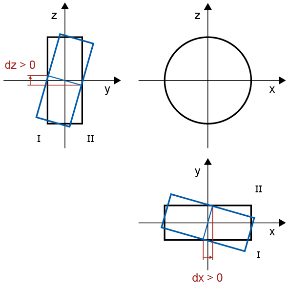
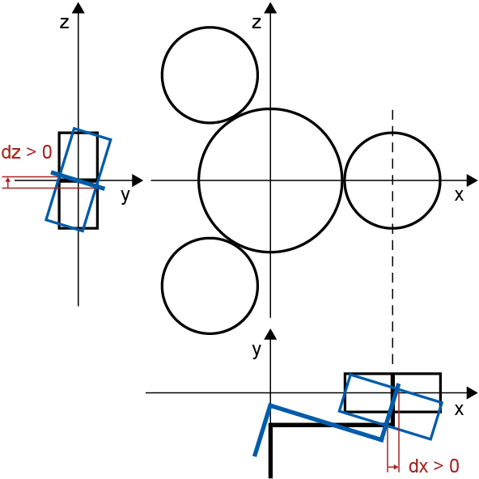
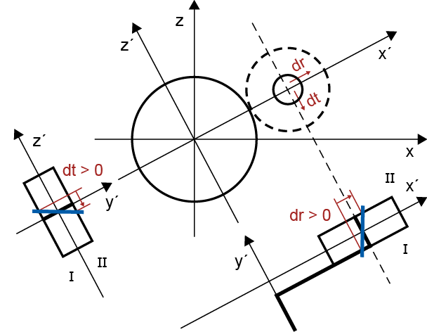
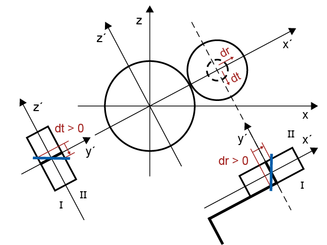

|
|
|


单个零件偏移的定义
行星系统中包含以下部件：
- 太阳轮
- 行星架（转架、转臂）
- N 个行星轮及对应的 n 个销轴
- 内齿轮
您可以在此齿轮单元中指定这些部件的位置，并在对话框中指定相应的偏移量。要显示此对话框，请点击或选项卡中的按钮。所有值均指共用的齿宽。
您可以在“”选项卡中定义更多参数，用于对系统元件进行与载荷相关的对齐：
- 太阳轮相对于齿轮轴线的倾斜（见图15.18）。若不使用轴文件，太阳轮可作为“浮动太阳轮”处理。
- 行星架相对于齿轮轴线的倾斜（见图15.19）
- 行星销相对于行星架在圆周方向 dt 和径向方向 dr 上的倾斜（见图15.20）。要为由于扭转引起的行星架变形建模，必须首先为 dt 设定一个值。该值指行星轮的齿宽。
- 行星轮相对于行星螺栓轴线的倾斜。正向偏移（在圆周方向 dt 和径向方向 dr）根据惯例定义（见图15.20）。
- 内齿轮相对于齿轮轴线的倾斜（见图15.18）。内齿轮的锥形延伸部分也可以予以考虑。
- 行星螺栓的变形是由行星架的扭转引起的。如果在“扭转”选项卡中输入了扭矩方向，软件会检查各值，如果 dt 的前缀未正确输入，将发出警告信息。
如果在“扭转”选项卡中已输入扭矩方向，软件假定 dt 表示由扭矩引起的行星架扭转。因此，当计算负载因子为负的载荷分箱的 KHβ 时，dt 的符号会改变。

图15.18：太阳轮和内齿轮相对于齿轮轴线的倾斜

图15.19：行星架相对于齿轮轴线的倾斜

图15.20：行星销相对于行星架的倾斜

图15.21：行星轮相对于行星销的倾斜
您也可以使用轴文件来定义所有轴的对齐情况，但行星销除外。轴文件需经过与齿轮副相同的检查。例如，轴计算文件中输入的齿轮扭矩值必须与计算模块中输入的齿轮值一致。行星架轴的特点是其两个联轴器：一个联轴器将扭矩传递给太阳轮，另一个联轴器将扭矩传递给内齿轮。两个联轴器的“有效直径”必须与太阳轮-行星轮中心距相同。“载荷作用长度”也必须适合行星轮的齿宽。如果对太阳轮、行星轮或内齿轮使用轴文件，则必须单击额外的加号按钮以选择必须考虑的啮合情况。
比例轴对齐根据部分载荷 wt（用于接触分析）或 ISO 系数 KV、KA 和 Kγ 进行缩放。
与第一个行星轮的角度 Θ 定义每个系统定义中第一个行星轮必须所在的位置。每个后续行星轮必须与上一个行星轮有 2π/N 的角偏置。在指定行星架偏移量下，行星轮上的载荷分布取决于行星轮的位置。修改 Θ 也会改变 KHβ，这正是该输入使您能够计算“最坏情况”的原因。
您可以在选项卡中设置与载荷无关的轴倾角/偏差误差。
在“”选项卡中，您设置扭矩施加到系统的侧面或产生扭矩的侧面（取决于该元件是驱动元件还是从动元件）。您可以选择以下 3 个选项之一来输入扭矩方向：
- 未被考虑
- 扭矩施加/产生在侧I
- 扭矩施加/产生在侧II
每个配置也以图形形式显示，以便用户检查其输入。
如果使用轴文件定义轴变形，则扭矩会根据轴计算结果自动计算得出。
行星架通常比轴计算中指定的更复杂。因此，行星架的扭转变形通常大于轴计算中确定的值。所以，可从轴计算中取扭转变形值，或在 dt 下输入 "行星螺栓"（或使用 FEM 计算来确定它）。
Defining the misalignment for individual parts
The following parts are assumed in a planets system:
- Sun wheel
- Planet carrier
- N planet gears with the corresponding n pins
- Internal gear
You can specify the position of these parts in the gear unit and the corresponding misalignment in the dialog. To display this dialog, click on the button in the or tab. All values refer to the shared facewidth.
You can define more parameters in the "" tab for load-specific alignment of system elements:
- Tilting of the sun to the gear axis (see Figure 15.18). If no shaft file is used, the sun can be handled as a "floating sun".
- Tilting of the planet carrier to the gear axis (see Figure 15.19)
- Tilting of the planet pin relative to the planet carrier in circumferential direction dt and in radial direction dr (see Figure 15.20). To model a carrier deformation due to torsion, you must first set a value for dt. This value refers to the planet's facewidth.
- The tilting of the planet gear is relative to the planet bolt axis. The positive misalignment (in circumferential direction dt and radial direction dr) is defined according to the convention (see Figure 15.20).
- The tilting of the internal gear relative to the gear axis (see Figure 15.18). The conical extension of the internal gear can also be taken into consideration.
- The deformation of the planet bolt is caused by the twisting of the planet carrier. If the direction of torque has been input in the "Torsion" tab, the software checks the values and issues a warning message if the prefix for dt has not been entered correctly.
If the direction of torque has been input in the "Torsion" tab, the software assumes that dt represents the twisting of the carrier due to torque. For this reason, the sign for dt is changed when KHβ is calculated for load bins with a negative load factor.
Figure 15.18: Tilting of the sun and internal gear to the gear axis
Figure 15.19: Tilting of the planet carrier to the gear axis
Figure 15.20: Tilting of the planet pin to the planet carrier
Figure 15.21: Tilting of the planet to the planet pin
You can also use shaft files to define the alignment of all the shafts, except the planet pin. The shaft files undergo the same checks as a gear pair. For example, the value input for gear torque in the shaft calculation files must match the value entered for the gears in the calculation module. The carrier shaft is characterized by its two couplings: one coupling transfers the torque to the sun wheel and the other transfers the torque to the internal gear. The "effective diameter" for both couplings must be the same as the sun-planet center distance. The "length of load application" must also be appropriate for the facewidth of the planet gear. If a shaft file is used for the sun, planet or internal gear, you must click on an additional Plus button to select the meshing that must be taken into consideration.
The proportional axis alignment is scaled with the partial load wt (for contact analysis), or with the ISO factors KV, KA and Kγ.
The angle to the first planet Θ defines where the first planet gear must be located for each system definition. Every one of the subsequent planetary gears must have an angular offset of 2π/N to the previous gear. The load distribution on the planet for the specified planet carrier misalignment is dependent on the position of the planets. Modifying Θ will also change KHβ, which is why this entry enables you to calculate the "worst case".
You can set the non-load-specific inclination/deviation error of axis in the tab.
In the "" tab, you set the side from which torque is introduced to the system or the side from which it is produced (depending on whether the element is a driving or driven element). You can select one of the following 3 options for inputting the direction of torque:
- Not taken into account
- Torque is applied/produced on side I
- Torque is applied/produced on side II
Each configuration is also displayed as a graphic so that the user can check their entries.
If a shaft file is used to define the shaft deformation, the torque is calculated automatically from the results of the shaft calculation.
The planet carrier is usually more complicated than is specified in the shaft calculation. For this reason, the carrier torsion is often greater than determined in the shaft calculation. Consequently, you can either take the torsion deformation value from the shaft calculation or enter it under dt for "planet bolt" (or use an FEM calculation to determine it).